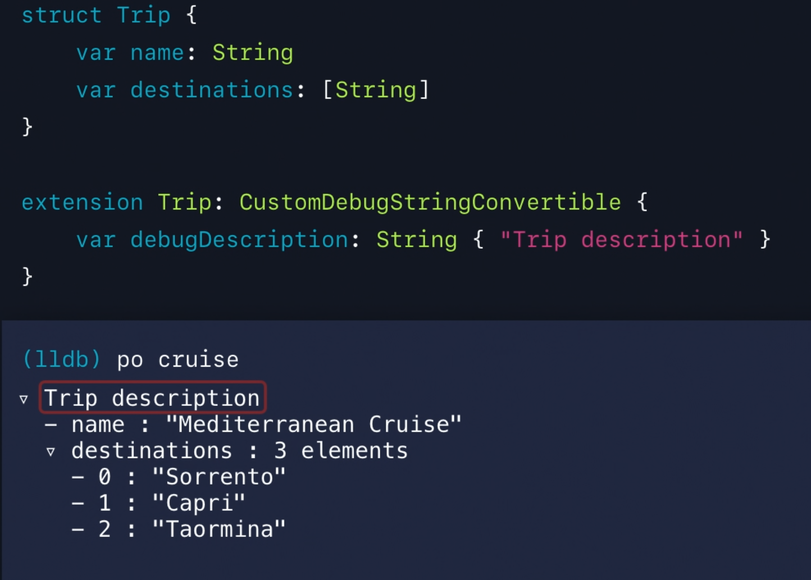
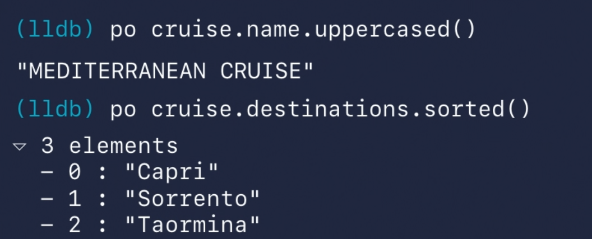

po command
We usually use po to print object description, which does the same job as expression --object-description.
Alias the command
We can also use command alias to custom it. like
command alias my_po expression --object-description 
Custom the output
We can add debugDescription to custom the output when using po

Others jobs po can do

What LLDB does behind the Po command

p command
1 | p is a alias of `expression |

The result of LLDB is given a increasing name, such as $R1 and $R2

Dynamic type resolution

In Swift, the static representation of a type in the source code and the dynamic type at the runtime, aren’t necessarily the same. For example, a variable might be declared using a protocol of this type. In this example, the static type of
cruiseisActivity. But at runtime, the variable will have an instance of typeTripwhich is the dynamic time. If we print the value ofcruise, we get back an object of typeTripbecause LLDB retell results metadata to display the most accurate type for a given variable at a given program point. This is what we calldynamic type resolution.
With the p-command, dynamic type resolution is only performed on the result of the expression.
This happens because if you remember, LLDB compiles code where running p and the only type it sees is the one in your source code, the static one. It’s the same thing as typing the expression cruise.name in your source code. The static compiler will reject it with an error. 
If you want to evaluate the expression without errors, you need to first cast the object explicitly to its dynamic type and then access the field on the result. This is true both for the debugger and your source code.

“p” Under the Hood

Formatter
After it performed dynamic type resolution on the result, LLDB passes the resulting object to the formatter subsystem which is the part of LLDB responsible for printing a human readable description of objects.

v Command
- The output of
vis exactly the same aspas it also relies on the formatter we just described. vis just an alias we introduced in Xcode 10.2 for theframevariable command- The v-command doesn’t compile and execute code at all which makes it very fast.

v under the hood

frame command

po vs p vs v

scan qr code and share this article